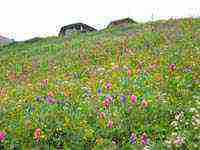

Coğrafi Konum
Rize ili batıda Trabzon, güneyde Erzurum ve Bayburt, doğuda Artvin illeri ile kuzeyde Karadeniz’le çevrilidir.
Rize İlinin yüzölçümü 3920 km² ’dir. Çok engebeli ve dağlık bir arazi yapısına sahip olan Rize’nin kıyı şeridinin uzunluğu 80 km, genişliği ise 20-150 m arasında değişmektedir.
Kıyı şeridinde akarsuların taşıdığı alüvyonlarla oluşan düzlükler yer almaktadır. Yüksek kıyılardan oluşan Rize kıyıları genellikle sade bir görünüşe sahiptir.
Kıyı şeridinde yer yer falezlere ve taraçalara rastlanır. Kıyı şeridinin hemen arkasında 150-200 m’yi bulan tepeler yükselir. Bu alandan itibaren Karadeniz’e dökülen akarsular dar ve derin vadiler oluşturur.
Dik yamaçlı “V” profilli bu vadiler yaklaşık 2000 m yüksekliğe kadar devam eder.
2000 m yükseklikten sonra 3200 m yüksekliğe kadar olan kısımlarda basık sırtlar, dik yamaçlı “U” profili vadiler yer alır.
Bu sahada çok sayıda buz yalağı ve moren set gölleri yer almaktadır. Yüksekliği 3000 m. yi aşan alanlar Rize topraklarının en sarp kısımlarını oluşturmaktadır.
Bu alanda Rize’nin en yüksek noktası olan Kaçkar tepesi yer almaktadır.
İKLİM

Rize yöresinde Karadeniz iklimi hüküm sürmektedir. Karadeniz ikliminin özelliği, yazları serin kışları ılıman ve her mevsim yağışlı olmasıdır. Bunda en büyük etken dağların kıyıya paralel uzanmasıdır. Rize’nin yıllık ortalama sıcaklığı 14 C. dir. Rize’de bu güne kadar kaydedilen en düşük sıcaklık -7C, en yüksek sıcaklık ise 38 C olarak tespit edilmiştir.
En soğuk ay ocak, en sıcak ay temmuzdur. Yıllık yağış miktarı 2300 mm. nin üzerinde olan Rize, Türkiye’nin en çok yağış alan ilidir. Rize’de yağış her mevsime dengeli olarak dağılmakta olup kurak mevsimi yoktur. İlde en az yağış ilkbaharda, en çok yağış sonbaharda görülür. Nem oranı her zaman %75’in üzerindedir.
BİTKİ ÖRTÜSÜ
Bölgenin doğal bitki örtüsü, kıyılarda nemlilik ve yağışın fazla olması sebebi ile geniş yapraklı gür ormanlardan oluşur. Türkiye ormanlarının %25'ini barındırır ve sahip olduğu ormanlar bakımından Türkiye'nin en zengin bölgesidir.